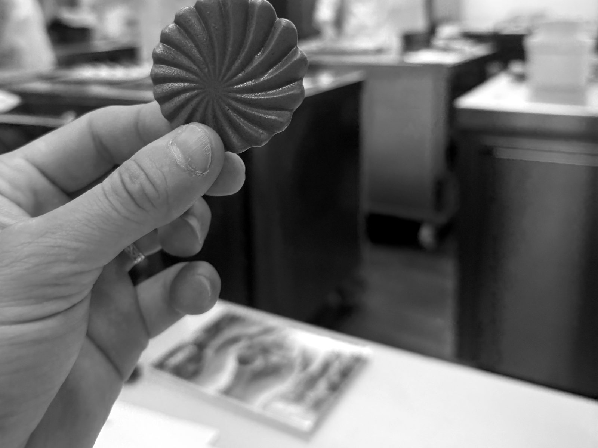
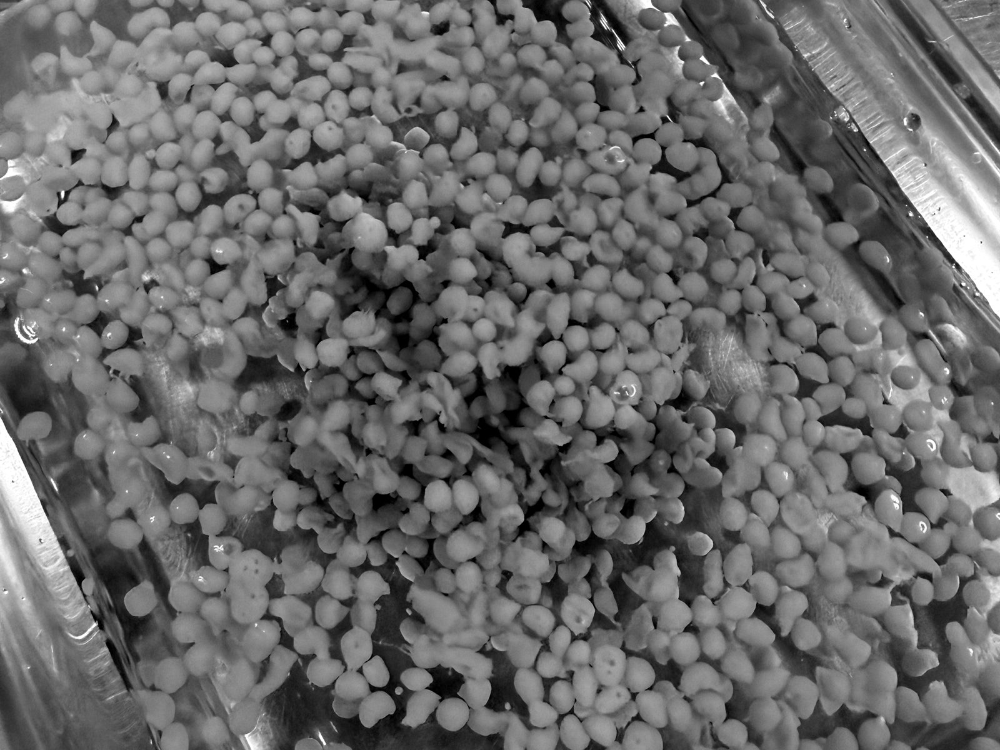
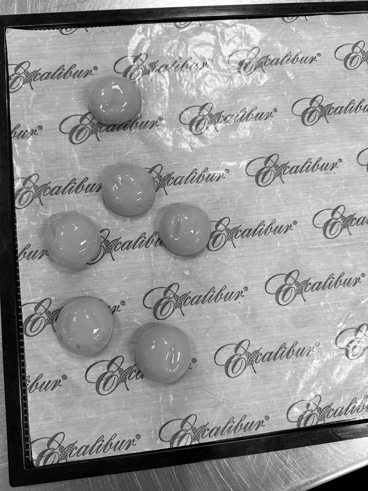
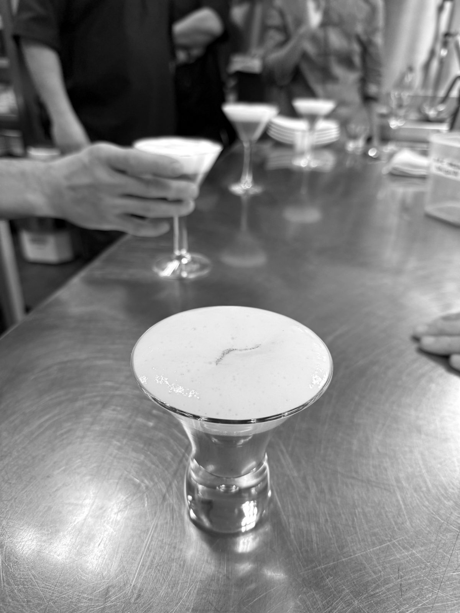
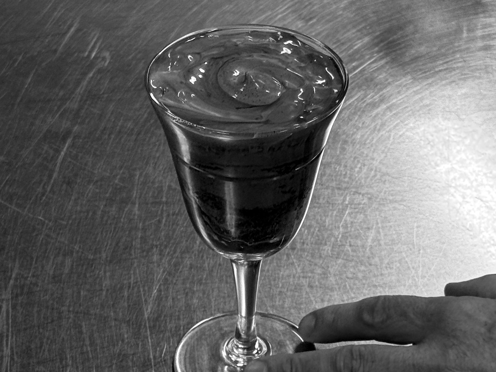
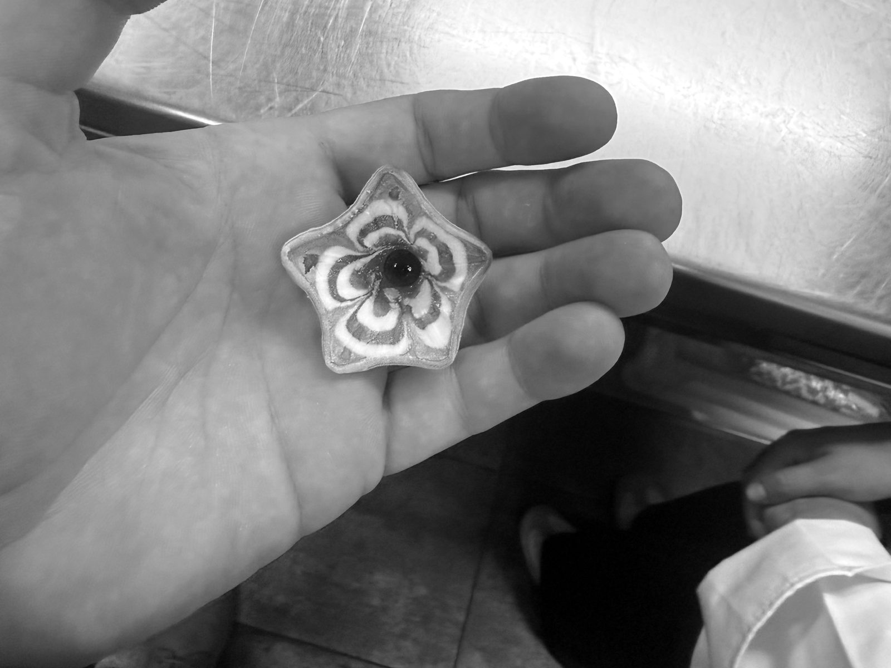

Bring the siphon, the stencil and the alginate bath aboard first: they make the plates guests photograph, they run on a domestic dehydrator and a fridge, and most of the work is done on a quiet afternoon, not during service.
Eight techniques that look current, need no laboratory and fit a yacht galley, each with the dish to make first. The dish ideas come from the recipe sheets of a five-day modern-techniques course at Vakuum, Barcelona, in October 2026; the photographs were taken there. How long each preparation holds at sea is in the sister piece; the books behind them are on the modernist shelf.
The eight, and the dish to make first. Tap one to jump to it.
Crisps through a stencil
A fruit or vegetable purée, set, spread thin and dried into a shape that snaps.
Set a purée with a little gelling agent, blend it back into a smooth fluid gel, spread it through a plastic stencil onto a dehydrator sheet and dry it until it snaps. The gel holds the purée in an even film, so the crisp dries flat instead of cracking at the edges. Strawberry for the breakfast bowl, pumpkin on the soup, beetroot on the goat's cheese. Where it fails: sugar pulls water back out of the air, so a crisp that bends instead of snapping has been left out; a few minutes back in the dehydrator restores it. Ahead: a week's worth on a changeover day, in an airtight box with a silica sachet, in the driest locker, never the shelf over the dishwasher.

Pearls in cold oil
Drops of hot agar gel that set into beads as they sink through cold oil.
Agar has to be boiled to dissolve, above 90 °C, and sets as it cools; drop it from a pipette into a tall glass of oil chilled in the freezer and each drop rounds off as it falls and sets before it lands. Honey pearls on Greek yoghurt, soy pearls on tuna tartare, pea pearls on the risotto. Agar is the right gel for a hot deck: it only melts again at 85 to 95 °C, so the pearls hold on a warm plate where gelatine would run. Where it fails: flat pearls mean the oil is too cold or the glass too short. Ahead: rinse off the oil and keep them in a spoonful of their own liquid, because agar weeps as it stands.

Spheres with a liquid heart
A thin skin around a liquid that bursts in the mouth.
Alginate sets wherever it meets calcium. In reverse spherification the calcium is in the food and the alginate is in the bath, so the skin forms on the outside and stops growing once the sphere is rinsed: it does not set solid in the fridge. Freeze the filling in half-sphere moulds first and every sphere comes out round. Dairy carries its own calcium, so a liquid yoghurt sphere with granola is the easy start. Where it fails: alginate will not gel below about pH 4, so passion fruit or citrus dropped straight into a calcium bath stays liquid or turns grainy; make them the reverse way, with calcium added to the fruit. Ahead: rinsed spheres keep in a light syrup or their own juice; the hold is in the sister piece.

Airs
A cloud of tiny bubbles skimmed off a flavoured liquid.
Lecithin, the emulsifier in egg yolk, sold as a soya powder, holds a froth of tiny bubbles on a thin liquid. Very little does it: Khymos's lime air uses 0.3 per cent, and adding more makes the foam less stable, not more. Blend at the surface in a wide, shallow container, wait a few seconds and spoon off the top. Coconut air on a rum cocktail at sunset, mustard air on the charcuterie board, lemon air on raw fish. Where it fails: coarse bubbles that pop at once mean too much lecithin or a fatty base. Ahead: only the base; the air lasts minutes.
The making is half the dish: an air built at the bar, in front of the people about to drink it, is the moment they remember.
Then the drink goes out with its cloud still standing.

The siphon, hot and cold
One half-litre bottle that turns a sauce, a cocktail or a batter into foam on demand.
Nitrous oxide dissolves into the liquid under pressure and expands into bubbles at the nozzle; fat, egg or gelatine holds them. A hot yuzu hollandaise makes eggs Benedict for twelve without a split sauce; parmesan foam goes over pasta, brown butter foam on fish, a warm daiquiri foam over the drink. For the crew: pancake batter, straight from the fridge. Where it fails: a runny foam usually means an overfilled bottle; respect the fill line. A steel Gourmet Whip can sit in a bain-marie up to 75 °C; an insulated Thermo Whip must never be heated from outside. Ahead: a gelatine-set foam needs four to six hours in the fridge, so charge it after lunch for dinner; the egg foams are made to order.

Clouds and meringues
Whipped gelatine and dried meringues that hold a shape you choose.
Whip a melted gelatine mass with flavour until it is white and airy, pipe or press it into a mould, and it sets into a soft cloud: raspberry, coffee, passion fruit. Dried meringues go further, piped into flowers and dried hard. Both make petits fours that look made for the evening when they were made in the afternoon. Where it fails: gelatine melts near body heat, so a cloud slumps on a sunny deck; plate it from the fridge and serve it after sunset. A meringue that turns sticky has taken on water, and goes back in the dehydrator. Ahead: clouds a day in the fridge; meringues with the crisps, in the same dry box.

The vacuum chamber
Pickles in minutes and fruit that looks like glass.
In a chamber vacuum the air trapped in the fruit's cells expands and escapes; when the pressure comes back, the liquid around it is pushed into the space the air left. Cucumber in a cold brine becomes a pickle at the pass; watermelon with lime turns dense and translucent. Where it fails: it needs a chamber machine; an edge sealer only squeezes the bag. The fruit is raw, so it browns in air and is not preserved by the cycle. Ahead: compress the morning of service and keep it cold, in its liquid. The siphon does it for fish: salmon cured under pressure while the table is laid.
The overnight bath
The cooking runs while you sleep, and the chilling is what keeps it safe.
Collagen turns to gelatine slowly at moderate heat, which is why a tough cut becomes tender in a bath without drying out. Douglas Baldwin gives chuck 24 to 48 hours at 55 to 60 °C and calls the result "the texture of filet mignon"; lamb shoulder and veal cheeks reward the same patience. He sets the floor at 54.4 °C. Where it fails: in the cooling, not the cooking. Pouches go straight into water that is at least half ice; a 25 mm piece takes about 50 minutes. Ahead: below 5 °C, under ten days; a boat fridge opened all service often is not, so the thermometer, not the label, sets the date. The rest of the chain is in the sister piece.
What stays ashore
Liquid nitrogen, on almost every boat.
Nitrogen looks the most spectacular of all and it is the one to leave on the dock: one litre boils into roughly 650 litres of gas, and in a closed galley that gas takes the place of oxygen without any smell or warning. The arithmetic for a real galley is in the sister piece. A siphon, a stencil and a bath of alginate will fill a charter's worth of plates without it.
Sources
Dish ideas from the recipe sheets of the modern-techniques course at Vakuum, Barcelona, 22–26 October 2026; no recipe, quantity or method from those sheets is reproduced here. Photographs taken during the course. Lersch, M. (ed.), Texture: A hydrocolloid recipe collection, v3.0, 2014, khymos.org (agar, alginate, lecithin chapters). iSi Gourmet Whip instructions for use. Baldwin, D. E., A Practical Guide to Sous Vide Cooking, douglasbaldwin.com, read 6 November 2026. Kassa et al., Food Science & Nutrition, 2026. Arnold, D., Hydrocolloids Primer, Cooking Issues. European Industrial Gases Association, Doc 44/18, 2018.
Have a technique or a question? Share it.
Join the conversation